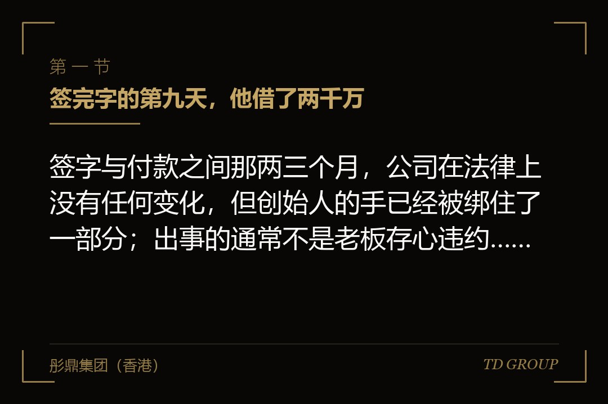
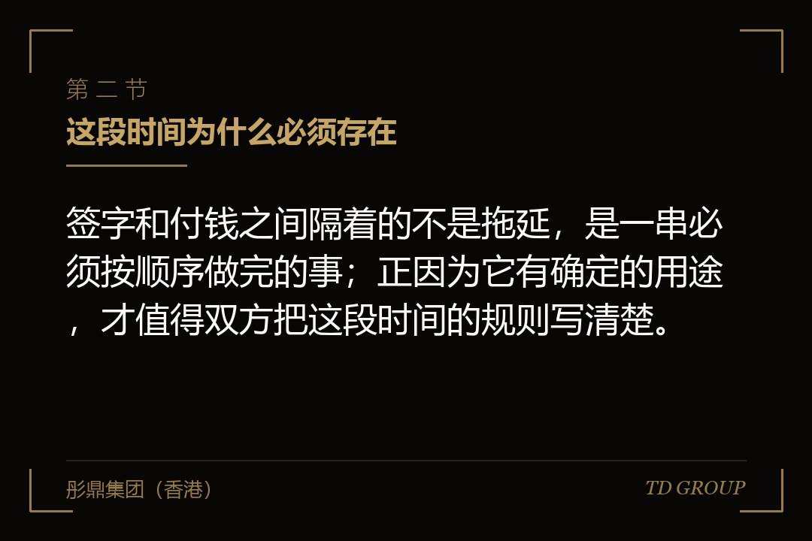
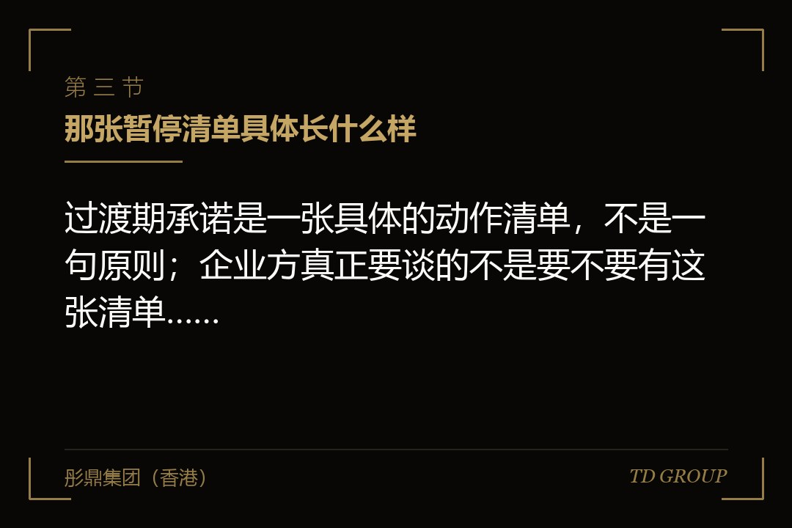

一、签完字的第九天，他借了两千万

结论先行：签字与付款之间那两三个月，公司在法律上没有任何变化，但创始人的手已经被绑住了一部分；出事的通常不是老板存心违约，是他不知道自己已经不能这么做了。
假设有这么一家做轨道交通信号部件的企业。它谈成了一轮融资：投资方出一亿两千万，投前估值四亿八，占两成，协议签完之后六周内完成交割。签字那天双方吃了顿饭，老板觉得这件事已经办完了，剩下的是律师和会计的活。
签完字的第九天，一家整车厂给了他一个订单，要求四个月内交付。现有产线吃不下，得新上一条，预算三千八百万。老板做了三件事，每一件都很符合他过去十几年的做事方式：动用银行授信借了两千万；把名下一处厂房办了抵押作为增信；跟设备供应商签了一份两千六百万的采购合同。
四周后交割前核查，投资方的律师把这三件事一件不落地找了出来。协议里的过渡期承诺写得很清楚：单笔超过五百万的资本性支出、任何形式的新增借款、对公司资产设定任何担保，均须投资方事先书面同意。三条全踩了。
后面发生的事不是翻脸。投资方没有终止交易，只提了三个要求：资产状况变了，法律与财务核查要就借款与抵押这两项重做一遍；交割日推迟五周；新增的两千万借款从投前估值里扣掉，另因抵押带来的额外核查与不确定性，投前再谈掉两千万。投前估值从四亿八变成四亿四，投后从六亿变成五亿六，投资方持股比例从两成变成两成一点四。
那条产线本身是赚钱的，订单也真实存在，这个判断没错。但那五周的推迟让他在设备供应商那边违了约——付款节点是按原定交割日排的，他赔了违约金；估值那一下，等于创始人一方多让出将近一点五个点的股权，按当时的投后计价是八百多万。而这条产线他完全有能力晚两个月再上。他后来讲过一句话：我一直以为签完字这家公司还是我的，钱到不到账那是他们的事。
有几件相邻的事此处只作一句交代：条款清单到交割的整体流程与节奏、条款清单里哪些条款签了就有约束力、陈述与保证与赔偿机制、共管账户与预留款、按里程碑分期到账、这一轮拿到的钱在用途上受什么管控、交割之后投资方的常设否决事项、特殊权利何时终止、降价轮怎么谈价格、尽职调查与资料室怎么准备、增资与老股转让的差别、外部担保怎么清理——这些都另有专门的讨论，本文一律不展开。本文只讲一件事：签字那天到钱到账那天，中间这段时间里双方各自被什么绑住。
二、这段时间为什么必须存在

结论先行：签字和付钱之间隔着的不是拖延，是一串必须按顺序做完的事；正因为它有确定的用途，才值得双方把这段时间的规则写清楚。
签完协议不能立刻打款，是因为中间有一批事只能在签字之后才能做：开股东会与董事会作出增资决议，其他股东出具放弃优先购买权的文件；办登记变更，涉及外资的还要办外汇与商务备案；做完尽职调查里发现的整改事项；签关键人员的竞业限制与保密文件；律师出具法律意见。投资方那边也有自己的投资决策、内部合规审查与资金调拨流程。事情多的、涉及审批的、股东结构复杂的会更久。
打个比方：它很像二手房从签合同到过户之间的那一段。房子还登记在卖方名下，钥匙也还在他手上，但他不能再把它租出去、不能再拿去抵押、不能把说好要留下的装修拆走；买方也不能反悔，定金押在那里。合同管的正是"这段时间里这套房子不许发生变化"。
所以这段时间的规则是双向的：企业方被过渡期承诺绑住，投资方也有在条件满足时按约定完成交割的义务。这不是投资方单方面给自己加保险——他给出的那个价格，是基于尽职调查看到的资产、负债、合同、团队和股权结构算出来的，这些若在他付钱之前可以随意变动，价格就失去了依托。一份边界合理的过渡期承诺，正是让投资方敢于在尽职调查结束时就把价格定下来的前提。
三、那张暂停清单具体长什么样

结论先行：过渡期承诺是一张具体的动作清单，不是一句原则；企业方真正要谈的不是要不要有这张清单，而是清单上每一条的金额门槛和日常经营例外怎么划。
典型的过渡期承诺大致覆盖这么几类动作。其一是钱出公司的动作：不得宣告或者派发股息、不得减资、不得回购股份、不得向股东及其关联方支付协议约定之外的款项。
其二是新增负担的动作：不得新增借款、不得为他人提供担保、不得在公司资产上设定抵押或质押、不得对外提供财务资助。
其三是处置资产的动作：不得出售、转让或以其他方式处置重大资产，不得转让核心知识产权，不得就核心技术授予排他性许可。
其四是动股权的动作：不得发行新股、不得调整现有股权结构、不得授予新的期权或者变更期权池、不得与任何人签署与股权有关的书面或口头安排。
其五是大额交易：单笔或者一定期间内累计超过约定数额的合同、资本性支出与关联交易，须事先取得书面同意。
其六是人的动作：不得对高管与核心技术人员超常规调薪、不得发放非常规奖金、关键人员不得解聘或变更岗位、不得修改公司章程与重要的内部治理文件。
其七是一组必须做的正面义务：按正常方式继续经营、维持现有保险有效、按期履行重大合同、保持账簿完整、发生可能影响交割的事项及时通知投资方。
假设有一家做高纯石英砂的企业，在过渡期里踩了两条，而这两条老板都没觉得是在动公司的根本。他把一位跟了自己二十年的生产副总提为总经理，并且在饭桌上口头承诺给对方三个点的股权作为激励；同时因为那一年经营不错，他让财务把年终奖提前到六月发，总额比往年多了四成。
交割前核查时，那句口头承诺被翻了出来——公司内部一封邮件里有人把这件事当好消息通报了。投资方的立场很明确：这属于与股权有关的安排，无论是否书面都必须在交割前处理干净；提前并超额发放的奖金也超出了薪酬体系保持稳定的范围。处理结果是，那位副总要签署文件确认此前不存在任何有效的股权安排，奖金部分从交割价格里作了对应调整。
真正的代价不在钱上：那位副总签字时情绪很大，最后是创始人从自己的持股里拿出一部分另行安排。老板事后说，他完全没意识到"许个股权"跟"新增一笔借款"在那份协议里是同一类动作。
这一节最该记住的是那句日常经营例外。几乎所有过渡期承诺条款的开头都有一句"除在正常经营过程中按以往惯例进行的行为外"，它是企业方在这段时间里的全部生存空间，边界完全取决于怎么写。
要做的动作有三个：金额门槛按公司真实的月度经营规模来定，不要接受模板里那个跟自己体量无关的数字；把这两三个月确实会做的常规动作列成白名单写进协议，例如按既有框架协议的正常采购、按现行薪酬制度的常规调薪、既有贷款的按期续贷；把"以往惯例"换成可验证的口径，例如最近十二个月的月度平均水平。
四、清单没做完，钱不会到
结论先行：交割先决条件里真正危险的不是难做的那几条，是要靠第三方点头的那几条——那些人跟这笔交易没有利害关系，也就没有配合的动力。
交割先决条件是一张"做完这些事，投资方才有义务付钱"的清单，通常包括：陈述与保证在交割日重新作出一次且仍然真实准确（这一项另有专门的讨论，此处只点明它是过渡期与交割之间的衔接点）；过渡期承诺已得到遵守；整改事项已完成；内部决议与外部审批备案已取得；第三方同意函已取得；关键人员已签署约定文件；未发生重大不利变化；交割文件已准备就绪。
这张清单里企业方自己控制得了的占多数：开会、出决议、签文件、补材料、办登记。真正会把交割拖住的，是第三方那一栏。
假设有一家做工业酶制剂的企业，它的交割先决条件里有一条：取得主要贷款银行对本次股权变动的书面同意。老板看到这条的反应是"走个形式"，因为公司跟那家银行合作了九年，从来没有逾期。实际情况是，那份贷款合同里有一条控制权与股权变动条款——实际控制人直接与间接合计持股比例低于五成一时，须事先取得银行书面同意，否则银行有权宣布贷款提前到期。而这一轮增资完成之后，创始人的持股会从五成四降到四成七。
这份同意函拖了七周。信贷经理要走内部审批，风控部门顺势提出把这笔存量贷款重新评一次，重评之后银行要求追加一笔保证金。最后是靠创始人补充个人担保才绕过去，整个交割从预计的六周变成三个半月。
要点在这里：交割先决条件里但凡出现"取得某第三方的同意"，这笔交易的时间表就被交到了一个跟交易本身毫无关系的人手里。银行、大客户、房东、特许经营的授权方、政府主管部门，各自有自己的流程和节奏，没有任何一个人的年度考核跟这笔融资有关。
所以企业方在签字前要把整张清单按"能不能控制"分成两栏，对控制不了的那些争取四件事。其一，把义务从"必须取得"改成"尽合理商业努力取得"——前者做不到就是条件未成就，后者做不到只要能证明已尽合理努力就不构成违约。
其二，约定替代方案：银行不同意的，由企业方在交割后一定期限内提前偿还该笔贷款或者更换融资渠道，同样视为条件满足。
其三，长停日要留够时间并可延展一次；它是这份协议的最后期限，到期时先决条件没有全部满足，投资方通常有权单方终止且不承担赔偿责任，有的协议还约定终止之后企业方要承担投资方已发生的中介机构费用，而企业方签字时对这个日期往往过于乐观。
其四，周期天然就长的整改事项与其卡在交割前，不如约定在交割后一定期限内完成，并为逾期约定明确的处理方式。
还要提醒一件事：先决条件是双向的。投资方未按约定提供主体资格文件、未取得自身所需的内部批准时，企业方也应当有权不交割。这一栏经常被写得很单薄，而它是企业方在这段时间里为数不多的对等筹码。
五、重大不利变化：它更常被用来重新谈价，而不是走人
结论先行：重大不利变化条款写得模糊是有原因的，而模糊的后果是它很少被真的用来终止交易，却经常被用来在交割前把价格重新谈一次；企业方知道这一点，才不会在对方提起它的那一天就以为交易已经死了。
这个条款的大意是：签约之后到交割之前，公司的业务、财务状况、经营成果、资产或者前景发生重大不利变化的，投资方有权不完成交割。它写得模糊，是因为要覆盖的正是那些双方都没想到、因而无法列进清单的事——能列的都列进了过渡期承诺，剩下那一大片未知交给它兜着。
有两个特点企业方应当心里有数。一是举证责任通常在主张的一方，也就是投资方要证明"重大"，而在没有量化标准时，这是一个要用事实和数据去论证的判断，不是发一封函就成立的。二是真的援引它终止交易，意味着双方大概率要就"算不算重大"发生争议甚至走到仲裁，时间和成本都不低，而投资方为这笔交易已经投入了尽职调查费用与几个月时间——所以它更常被用来要求重新讨论价格、追加保护性条款，而不是直接退出。
假设有一家做智能门锁的企业。签约之后的第五周，公司最大的一家渠道商通知不再续约，它在上一年贡献了公司三成一的收入，投资方随即发函主张这构成重大不利变化。
企业方的应对分了两步。头一步是把事实摆清楚：那条渠道虽然占收入三成一，但毛利率明显低于公司平均水平，按毛利贡献只有一成七，而且这家渠道商近两年一直在压价，公司内部早就在做替代准备。第二步是在四周之内补上两家新渠道商的框架协议，并把首批订单确认下来。
最后交易还是交割了，代价是估值下调六个点，并加了一条交割后的约束：新渠道在六个月内的实际发货量达不到约定水平的，创始人一方要按约定比例向投资方无偿转让一部分股权。这一条已进入业绩承诺与对赌的范畴，另有专门的讨论，此处不展开；写在这里是因为它说明了这个条款的真实归宿——它常常不是一个是否交割的开关，而是一次重新分配风险的谈判。
企业方在签字前可以争取的东西很具体，通常也不算难谈。其一是例外清单，这是最值钱的一项：宏观经济与资本市场的整体变化、公司所处行业普遍面临的变化、法律法规与政策的变化、自然灾害与公共卫生事件、以及因本次交易本身引起的影响，都不构成重大不利变化。
它的逻辑很直接——投资方要防的是这家公司自己出了问题，不是这个世界出了问题，而世界的风险本来就该由他承担；这份清单对投资方同样有价值，因为把将来可能发生的争议面缩小了。
其二是量化门槛：约定只有在导致公司连续若干个月的收入或者利润较约定基准下降超过一定比例时才构成重大不利变化——有了数字，这件事就从"你觉得重不重大"变成一道算术题。
其三是治愈期：一定期限内可以被修复的事项不构成重大不利变化，上面那家企业丢掉的渠道如果有一段四周的治愈期，补齐替代渠道之后根本不会成为谈判筹码。
其四是通知与协商机制：投资方主张重大不利变化的，应当在知悉之日起一定期限内书面通知并说明理由，双方先协商，这一条防的是把它留到交割日当天再拿出来用。
六、这两三个月赚的钱、亏的钱、分掉的钱，归谁
结论先行：定价基准日与交割日之间的损益归属如果没写清楚，它在交割前一定会变成争议；而争议的焦点往往不是明显的抽逃，是那些看起来完全正当的付款。
给公司定价用的是某个时点的财务数据，这个时点就是定价基准日，通常是最近一期经过审计或者审阅的报表日，而交割在几个月之后。这中间公司照常经营，赚的亏的归谁，要在协议里说清楚。
市场上大致有两种处理方式。
一种是锁箱：价格锁定在基准日的状态上，之后的经营损益不再调整价格，作为交换，企业方承诺基准日之后不发生任何"漏损"——漏损指价值从公司流向创始人一方或其关联方的动作，例如分红、向股东及其关联方付款、免除关联方债务、发放非常规薪酬与奖金、由公司承担本应由股东承担的交易费用，协议同时会列一张允许漏损的例外清单。
另一种是交割账目调整：按交割后的实际财务数据调整价格，通常围绕净负债与营运资金两个口径，更精确，但要多做一次审计、多一轮对账。
无论选哪一种，企业方都必须知道自己在基准日之后的哪些动作会被计价。另外，增资与老股转让在这件事上的利害不同——增资的钱进公司账户，过渡期损益本来就沉淀在公司里；老股转让的钱进出让方口袋，基准日之后的损益归谁必须写死。两者的差别另有专门的讨论，此处不展开。
假设有一家做数控刀具的企业。定价基准日是上一年的十二月三十一日，交割安排在次年四月中旬，这三个多月公司经营正常，累计净利一千一百万。协议里关于这段时间只写了一句"不得宣告或者派发股息"，既没写基准日之后的损益归属，也没有一份完整的漏损定义。
三月底，老板让财务把公司账上三千万现金中的两千二百万转给了自己控制的另一家公司，名义是归还股东借款。这笔借款是真实的：三年前公司资金紧张，他个人拿了这笔钱进来，有借款协议、有银行流水、账上一直挂着其他应付款。在他看来这是还自己的钱，不是分红。
交割前查账时投资方发现了这笔转账，立场同样有道理：这笔钱在基准日那天还在公司账上，是他们定价时看到的资产，三个多月之后它不在了，而拿走它的是创始人的关联方。争议的核心是，偿还一笔有真实基础的既有债务算不算漏损。
协议里没有定义，双方只能回到常理去谈，最后这两千二百万在交割时从投资款里对应扣减，由创始人自己承担。老板的感受是被冤枉了，而从交易的角度看这个结果并不离谱——他确实在定价之后把一笔计过价的资产转走了，只是动机完全正当。
这一节要给企业方的动作只有一个，但要正反两面都做：把漏损定义正着写清楚，把允许的例外也一并列出来——既有债务的按期偿还、按现行制度发放的正常薪酬与既定奖金、正常经营性的采购与付款、已在尽职调查中披露过的关联交易、本次交易中约定由公司承担的那部分费用。签字前列这张表只需要半天，交割前争论则要几周，而且必然有一方觉得自己吃了亏。
七、临时的约束和永久的约束，不要抄成同一张清单
结论先行：过渡期承诺是临时性的，交割那一刻就应当自动终止；而交割之后投资方作为股东的常设同意事项是另一回事，两张清单如果用了同一套门槛和范围，企业方就把日常经营也一并交出去了。
过渡期承诺的存在理由是把公司冻结在签字时的状态直到交割完成，所以它天然是临时的，协议里应当明确写出终止时点：自交割完成之日起本节约定自动终止。这句话看起来是常识，但它在不少协议里是缺失的，或者写得含糊。
交割之后的常设同意事项来源不同、目的也不同：它写在股东协议和公司章程里，投资方以股东或者董事的身份行使，通常长期存在，直到特殊权利按约定终止为止。
这一类条款另有专门的讨论，本文不展开，这里只讲两者之间的衔接点——这两张清单在起草时经常是同一份文件复制过去的，同样的事项范围、同样的金额门槛，一份放在过渡期条款里，一份放在股东协议附件里。
而两者面对的时间跨度完全不同：过渡期只有两三个月，公司本来就没打算做什么大动作，门槛定得低一些不会有实际影响；交割之后要跑很多年，同样的门槛就会卡住日常经营。
假设有一家口腔连锁诊所企业。它的投资协议里有一张十九条的事先同意事项清单，其中一条是单笔超过两百万的资本性支出须投资方书面同意。从签约到交割用了两个月，公司只开了一家新店，合同还是签约之前就签完的，这张清单几乎没产生任何摩擦，老板当时的印象是"形同虚设"。
交割之后，同一张清单原封不动地成了股东协议附件，长期有效。而这家公司正处在扩张期，一家新店的装修加设备平均要三百多万，一年开十几家。于是每开一家店都要走一次书面同意流程，最长的一次等了二十三天，中间有两个已经谈好的铺位被别人租走了。
企业方在这件事上要做的就三句话：明确写出过渡期条款自交割日终止；把交割后的常设同意事项当成一份独立文件单独谈，不接受"跟前面那张一样"；交割后那张清单的金额门槛按公司未来两三年的经营规模来定，而不是按当下这两个月。另外，过渡期里请示与同意的往来记录要完整保存，交割之后一旦发生争议，它们能证明投资方当时知情且同意。
八、签字之前谈哪几个开关，签字之后谁来看住这张清单
结论先行：这段时间的风险不在条款有多严，而在公司里没有一个人负责执行它；把协议翻译成一页纸的暂停清单并且指定一个人当闸口，比在谈判桌上多争两条例外更管用。
先说签字之前值得谈下来的开关，按价值排一下。其一是日常经营例外与金额门槛，使用频率最高，要按公司真实的月度经营规模定。
其二是同意机制的时限：约定投资方收到书面请求后若干个工作日内未答复视为同意——这一条对投资方的负担很轻，对企业方的价值却很大，因为过渡期里最耗人的不是被否决，是等不到回音而事情又不能停。
其三是交割先决条件的分栏，控制不了的改成尽合理努力、约定替代方案、长停日留够并可延展一次。其四是重大不利变化的例外清单、量化门槛与治愈期。其五是损益归属与漏损定义。其六是过渡期条款自交割日终止，并与交割之后的常设同意事项分开谈。
再说签字之后，这一段比上面几条都重要，因为它是绝大多数事故真正的发生地。违反过渡期承诺的很少是老板本人存心为之。更常见的是：财务总监按做了六年的惯例在三月安排了年度利润分配；销售总监签下一份带排他条款的经销框架协议；人力资源部门按既定窗口发了调薪通知；法务续签了一份到期的授权协议，条款跟上一版有出入。这些人手上没有那份投资协议，也没有人告诉过他们这两三个月跟平时有什么不同。
所以那张清单不能只存在于协议正文和老板的脑子里，可以做的有这么几件。其一，把过渡期承诺翻译成一页纸的暂停清单，不含法律术语，写清楚哪些动作要先停、哪些要先问——协议原文谁都看不下去，一页纸才有人看。
其二，指定一个人当那道闸口，通常是财务负责人或者承担董事会秘书职能的岗位，清单上的动作一律先过他；责任落到具体的人身上，这件事才有人管。其三，把闸口嵌进公司已经在跑的流程，用印、合同会签、付款、调薪四个环节各挂一道提示就够，另建一套的结局通常是没人走。
其四，需要投资方书面同意的事攒成一张待批清单定期发出；对方也要走内部流程，集中处理对双方都更快。其五，每周给投资方一封简短的过渡期情况说明——主动披露的成本远低于被对方在交割核查时查出来的成本：前者是沟通，后者是信任问题。
其六，交割完成当天就把这张清单正式作废并通知到相关岗位，否则各部门会在交割之后仍按它互相请示。
假设有一家做工程机械液压件的企业，事故就发生在最平常的地方。老板签完协议出差两周，公司财务按照连续做了六年的惯例，在三月作出利润分配决议并向股东付了八百万。整个过程走完了内部所有审批，没有任何一个环节觉得有问题——它每年都这么做，没人认为这是一件"新事情"。
交割前被投资方发现，处理是把八百万全额追回，创始人另行出具书面承诺，交割推迟三周。老板后来做的事很实在：他让法务把过渡期条款抄成一页纸，十一条，全是大白话，贴在财务和法务两个办公室的门后面，另外抄送给六个有签字权的人——这件事本来花二十分钟就能避免。
华尔街彤鼎俱乐部里，企业主在这一项上最常见的反应是，签完协议那天他们想的全是钱什么时候到，没有一个人想过接下来这两个月自己要少做点什么。
彤鼎集团（香港）有限公司在这类事情上承担的是统筹与陪同角色：在条款清单与协议起草阶段协助企业方逐项梳理过渡期承诺的事项范围、金额门槛与日常经营例外，把交割先决条件按可控与不可控分栏并测算时间表，协助界定重大不利变化的例外与门槛、损益归属与允许漏损的边界，并在协议签署之后协助企业方把这些约定落成公司内部可执行的清单与审批节点。
涉及审计、法律意见、证券发行与承销等持牌业务的，一律由具备相应资质的合作机构承做。以上均为市场经验性表述，实际安排受协议约定与各方谈判地位影响，不构成固定标准。
因此，融资谈到签字这一步，值得多问的从来不只是"这一轮我拿到多少钱、被稀释了多少"，还有"从今天签字到钱进账那天，我这家公司要按什么规矩过日子"——本质上，签字那一刻交易并没有完成，它只是从谈判进入了执行，而执行阶段的失误比谈判阶段的让步更贵：它让出的往往不是一个数字，是一次已经谈好的交易。